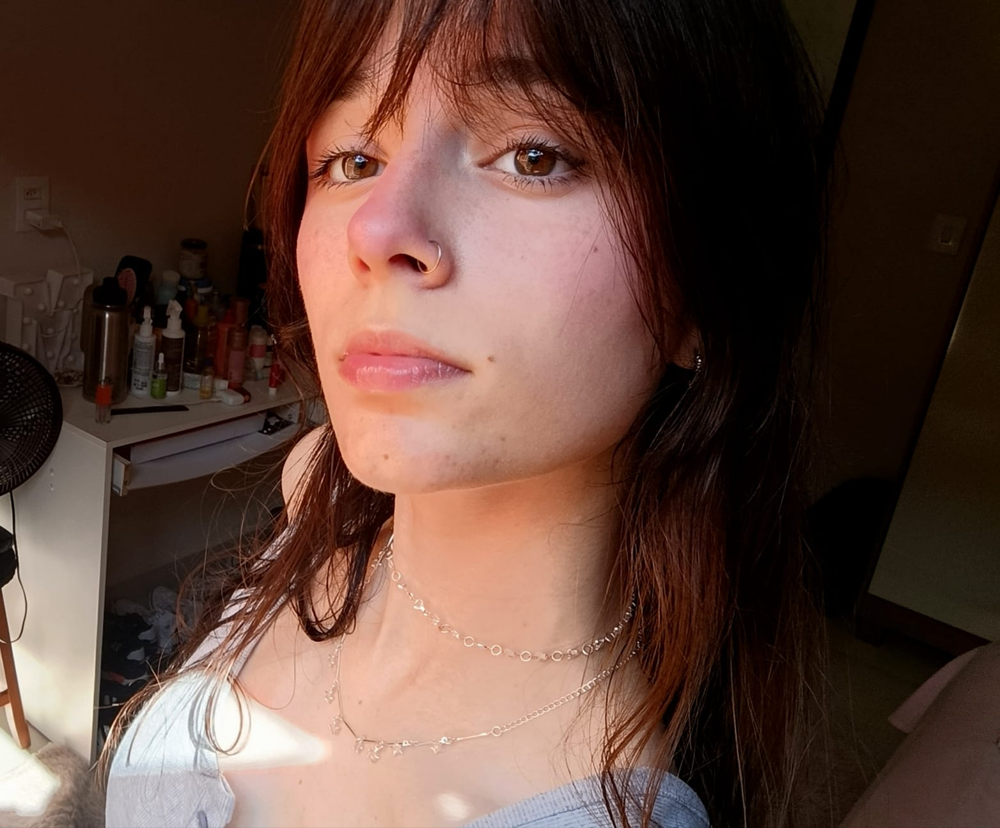
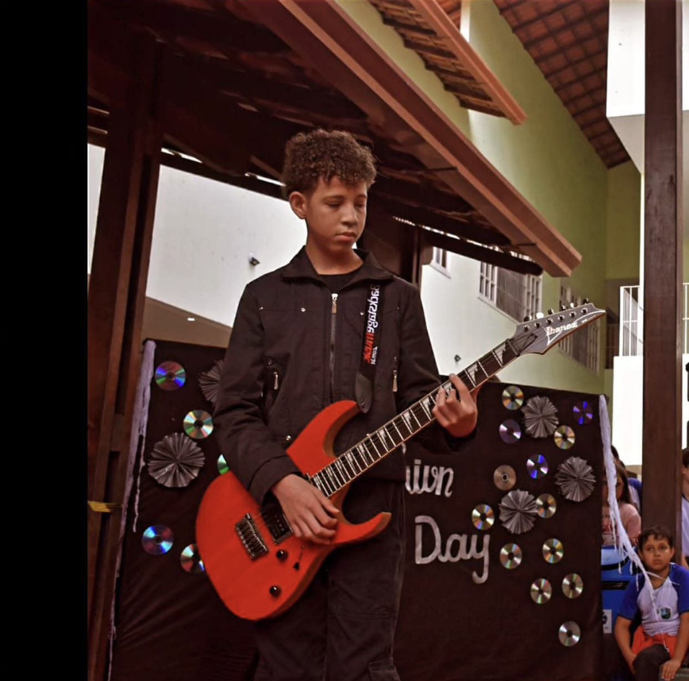

> Carregando dados...
12 Mentes. 1 Professor. O Futuro é Agora.
"Tenho 17 anos e adorei, muitas atividades interessantes, como programação e projetos que me desafiaram. Teve momentos difíceis, principalmente contra a ansiedade, mas fiz amizades incríveis que apoiaram o tempo todo e um professor que fez toda a diferença."

"Minha formação em TI me proporcionou o domínio de ferramentas de desenvolvimento e lógica de sistemas. Agora, busco me especializar em Front-End para implementar layouts modernos e transformar designs em aplicações funcionais, responsivas e atraentes."

"Meu nome é Davi e gostei muito do curso do Senac, pois foi uma experiência muito importante para minha formação. Adquiri conhecimentos relevantes na área de informática e me sinto mais preparado para os próximos desafios profissionais."